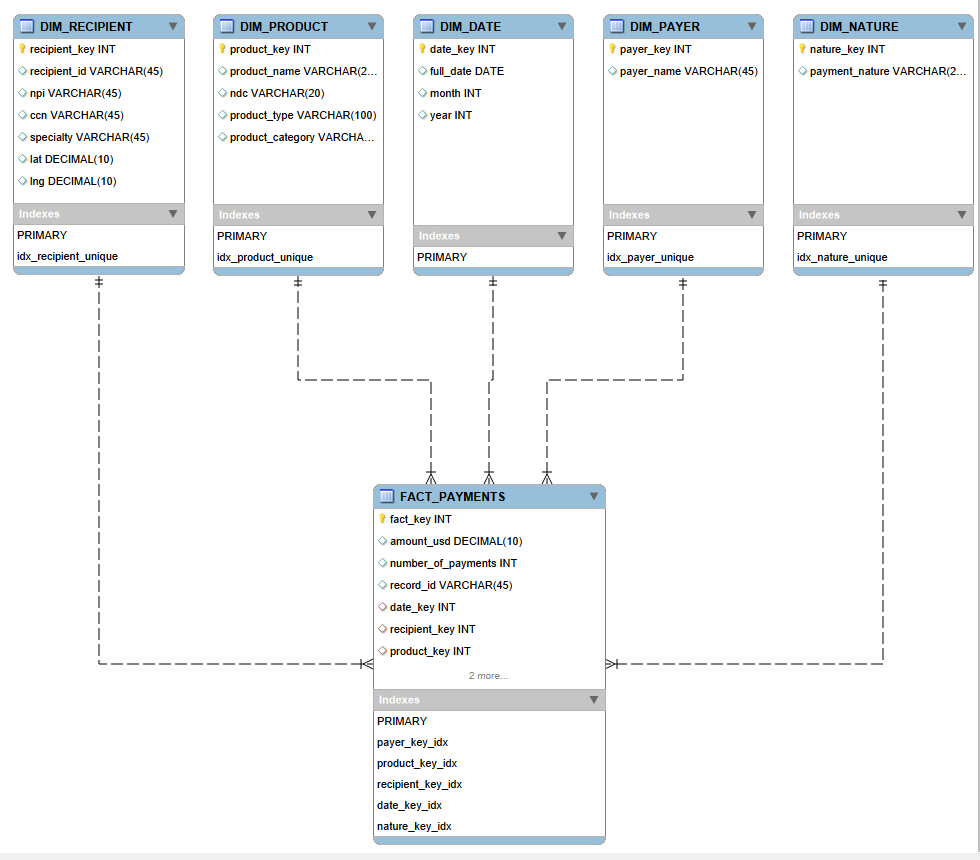

Healthcare Payments Compliance &
Spend Analytics
> Production-grade Star Schema data warehouse built on 15.4M records of 2024 CMS Open Payments federal healthcare data. Flagged $11.7M in provider payment compliance exposure and a $170M+ anomaly event. Currently migrating to BigQuery on GCP.
Compliance Exposure
$11.7M
Provider Payment Risk Flagged
Records Engineered
15.4M
CMS Open Payments 2024
Anomaly Event
$170M+
Surfaced via Z-Score Analysis
Performance
Sub-second
OLAP Query Execution
Compliance Intelligence Dashboard
Built on 2024 CMS Open Payments federal healthcare data — designed for compliance officers and healthcare operations leaders to monitor provider payment patterns, geographic distribution, and anomalous spend concentration across the US provider network.
Compliance Findings & Business Impact
$11.7M Compliance Exposure Isolated
Z-Score thresholds hardcoded directly into SQL automatically isolated $11.7M in provider payments with no associated product classification code — the specific payment signature that triggers CMS federal audits. This shifts compliance monitoring from reactive quarterly reviews to automated pre-audit detection. The system also surfaced an unexpected $170M+ anomaly event that manual reporting had never flagged.
Geographic Provider Payment Clustering
Geospatial mapping of CMS payment flows revealed that San Diego drives significantly higher surgical device payment throughput than Los Angeles, defying population-based assumptions. This finding exposes geographic concentration of high-risk payment signatures that aggregate national reporting would never surface — directly applicable to payor audit prioritization and provider network risk assessment.
Provider Concentration & The Whale Curve
Lorenz curve analysis confirmed that over 80% of total CMS-reported payment volume flows to the top 2% of active providers — a concentration pattern with direct implications for pharmaceutical manufacturer contracting and payor network compliance strategy. At this level of dependency, any disruption to top-tier provider relationships becomes a simultaneous compliance and financial event.
Data Architecture (The "How")
Star Schema on Federal Healthcare Data
The 15.4M-row CMS dataset was completely unsuited for executive reporting in raw form.
A Star Schema with one central fact table and five dimension tables
(Recipients, Geography, Products, Payers, Date) shifted query execution from minutes
to sub-seconds. A 100% checksum audit validated that
Source SUM(Amount) = Warehouse SUM(Amount) exactly — ensuring zero financial
data loss during ingestion. The pipeline is actively migrating to
BigQuery on GCP for cloud-native scalability.
Recovering Hidden Payment Records
CMS source files flatten multi-product payments into wide columns
(Product_1, Product_2...), causing client-side BI tools to
silently drop secondary records. A UNION ALL server-side unpivot
executed directly in MySQL recovered 18–20% of payment volume that every upstream
analysis had been systematically missing — a data quality failure invisible without
the database-layer extraction.
Geospatial Processing at the Database Layer
Geographic proximity calculations for provider network mapping were moved from
Tableau to MySQL's native ST_Distance_Sphere function, executing
directly against the recipient dimension. This eliminated the geospatial bottleneck
that was causing dashboard timeouts and enabled accurate ZIP-to-MSA normalization
at the full 15M-row scale.
Technical Toolkit
Project Summary
By engineering a production-grade data warehouse on federal CMS healthcare data, 15.4M raw payment records were transformed into a compliance intelligence platform. The Star Schema was the only path to sub-second executive reporting at this scale — and to surfacing $11.7M in risk that was invisible before.
Healthcare Data Engineering Architecture

Dimensional Modeling
Optimized Star Schema — CMS Open Payments
Performance Benchmarks
- • Dashboard load time reduced from >2 minutes to sub-second by shifting aggregation logic server-side.
- • 100% checksum audit:
Source SUM(Amount) = Warehouse SUM(Amount)validated exactly. - • 18–20% payment volume recovered via server-side UNION ALL unpivot — invisible to all prior analyses.
- • Zero-downtime geospatial schema migration via dimension hot-patching on ~1M-row dim_recipient.
01. Star Schema DDL (Fact Table)
Establishing a 15.4M-row Fact Table with surrogate keys and referential integrity to all five dimensions.
-- =========================================================
-- fact_payments — Central Fact Table
-- =========================================================
DROP TABLE IF EXISTS fact_payments;
CREATE TABLE fact_payments (
fact_key BIGINT AUTO_INCREMENT PRIMARY KEY,
record_id VARCHAR(50),
amount_usd DECIMAL(15, 2),
payment_count INT,
-- Surrogate Foreign Keys to Dimensions
date_key INT,
recipient_key INT,
product_key INT,
payer_key INT,
etl_created_at TIMESTAMP DEFAULT CURRENT_TIMESTAMP,
UNIQUE INDEX idx_record_id (record_id)
);02. Batch Ingestion (Stored Procedure)
50,000-row COMMIT-checkpointed ingestion preventing transaction log overflow on 15M+ row loads.
-- dim_recipient population with ZIP crosswalk hot-patch
SELECT 'Populating dim_recipient...' AS Status;
INSERT IGNORE INTO dim_recipient (
recipient_id, recipient_name, specialty,
city, state, zip, lat, lng
)
SELECT
COALESCE(NULLIF(recipient_profile_id, ''), hospital_ccn),
MAX(CASE
WHEN recipient_type LIKE '%Hospital%' THEN hospital_name
ELSE CONCAT(first_name, ' ', last_name) END),
MAX(recipient_specialty),
MAX(z.city_name), -- Golden Record from ZIP crosswalk
MAX(recipient_state),
LEFT(recipient_zip, 5),
MAX(z.lat),
MAX(z.lng)
FROM general_payments g
LEFT JOIN ref_zip_city z
ON LEFT(g.recipient_zip, 5) = z.zip_code
GROUP BY COALESCE(NULLIF(recipient_profile_id,''), hospital_ccn);